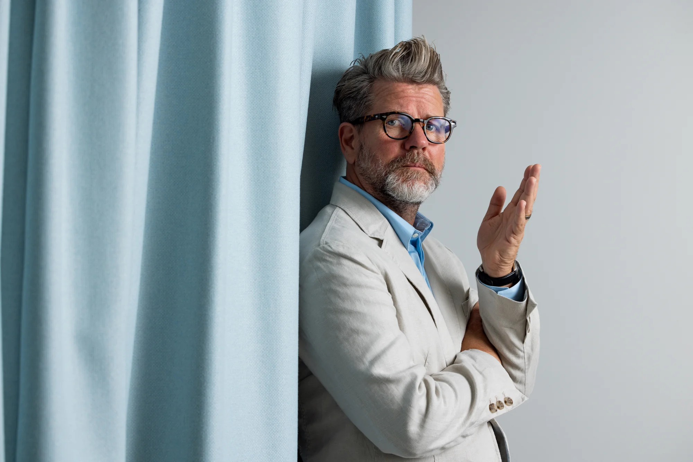

Edwina Jans
Archaeologist and cultural heritage expert at GML Heritage, specialising in education, communication and innovative engagement for heritage places.
 Image by Darren Bradley
Image by Darren Bradley
 Image by Darren Bradley
Image by Darren Bradley
 Image by Darren Bradley
Image by Darren Bradley
 Image by Darren Bradley
Image by Darren Bradley
Canberra Modern is an annual programme of events showcasing Canberra's unique mid and late twentieth century places and spaces.
Conservation Through ParticipationOur innovative events aim to increase awareness of Canberra's modernist character, heritage and uniqueness.
Through event-based advocacy and engagement with the community, Canberra Modern aims to promote protection and appreciation of the places which make an irreplaceable contribution to Canberra's historic urban and designed cultural landscape.
See What's at RiskCanberra Modern is a passionate team of heritage and design practitioners who have a genuine love for the city in which they live.
Archaeologist and cultural heritage expert at GML Heritage, specialising in education, communication and innovative engagement for heritage places.
Heritage management and interpretation specialist at Philip Leeson Architects. Churchill Fellow (2018/19). Investigating advocacy and engagement models around mid-century architecture.
Interior designer and Principal at GML Heritage. Specialist in cultural landscape assessment, heritage and sustainability. Getty Conservation Institute Scholar (2022/23).
TV Host, Comedian, Author & Design Advocate
Self-confessed 'Design Nerd' Tim 'Rosso' Ross passionately advocates for Australian architecture and design in engaging and innovative ways. A long-time Canberra Modern supporter, Tim speaks nationally on preserving Australia's important architectural character.
Awards: National Trust Heritage Award for Advocacy (2018) • Australian Institute of Architects National President's Prize (2019)
